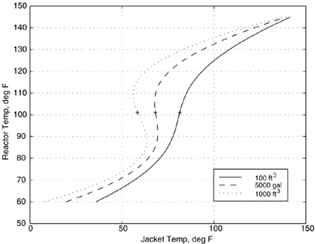
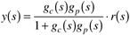
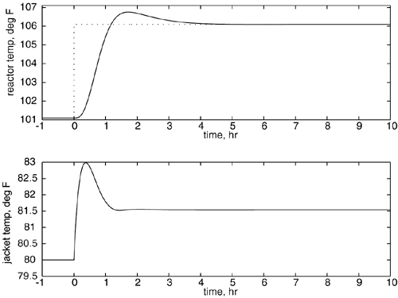

| [ Team LiB ] |
|
M8.4 Effect of Reactor ScaleIn this section we study the effect of reactor size on the steady-state and dynamic behavior of the reactor. Each reactor is designed with a residence time of 15 minutes, with a desired conversion of 50% (CA = 0.066 lbmol/ft3), resulting in a reactor temperature of 101.1°F. Reactor ScaleConsider now the following reactors, operated at 85% of the design volume.
Problem M8.2 Steady-State Jacket Temperatures Find the steady-state jacket temperatures for the 100 ft3 and 5000 gallon reactors. Solution: Substituting the parameter values and steady-state concentration and temperature into Equations (M8.6a) and (M8.6b), the resulting jacket temperatures are 80°F (100 ft3) and 65°F (5000 gallon). Steady-State (Nonlinear) ResultsExpanding on Problem M8.1 we can find the jacket temperature as a function of reactor temperature, and solve for a number of reactor temperatures to construct a steady-state input-output plot. This is shown in Figure M8-3 for different reactor sizes. The '+' symbol denotes the design operating point for each reactor. The jacket and reactor temperatures at this design point are consistent with the results in Problem M8.2. Figure M8-3. Steady-state input-output plot of reactor temperature as a function of jacket temperature. Notice that the larger reactors exhibit multiple steady-state behavior (this is also known as hysteresis). The desired steady-state operating point is denoted by '+'. There are several interesting things to note:
Linear Open-Loop ResultsThe steady-state operating point is CAs = 0.066, Ts = 101.1°F.
Problem M8.3 Open-Loop Stability Calculate the poles and zeros of the process transfer function for both size reactors. You should find that the 100-ft3 reactor is stable, while the 5000-gallon (668 ft3) reactor is unstable. Since the 5000-gallon reactor is open-loop unstable, it can only be operated at the design point of 101.1°F using a closed-loop control system. Linear Closed-Loop ResultsRecall that the closed-loop transfer function relating the setpoint to the output is  where the stability is determined by the roots of the denominator polynomial. The Routh stability criterion (chapter 5) can be used to determine the ranges of the controller tuning parameters that will assure a closed-loop stable system. See Additional Exercise 4 at the end of the module. Problem M8.4 Closed-Loop Simulations Develop a SIMULINK block diagram to perform closed-loop simulations for the two reactor sizes (100 ft3 and 5000 gal). For simplicity, use the linear process transfer functions (M8.8 and M8.9) to represent the respective reactor. Include two additional first-order transfer functions with time constants of 0.1 hour to account for unmodeled mixing and jacket dynamics (although these are included in your simulation studies, neglect them for any model-based controller design procedure). Here any of your favorite control system design techniques can be used: (i) Ziegler-Nichols, (ii) Tyreus-Luyben, (iii) IMC, (iv) IMC-based PID, (v) "ad-hoc" iterative tuning. In the following we use the IMC-based PID procedure for both the 100-ft3 (stable, Table 9-1) and the 5000-gallon (unstable, Table 9-3) reactors. The IMC filter factor (l) is adjusted to obtain a satisfactory closed-loop response to a step setpoint change in reactor temperature (including a consideration of the action of the manipulated jacket temperature). For the unstable reactor a setpoint filter (see Figure 9-8) should be used for improved response. Make plots of both the reactor temperature (output) response and the manipulated jacket temperature (input). Since the linear simulations are in deviation variable form, add the steady-state values to the deviation variables to plot the physical values. Your responses for a 5°F setpoint change should be similar to Figure M8-4. Figure M8-4. Closed-loop responses for reactor temperature setpoint changes of +5°F. Linear simulations for 100 ft3 reactor. IMC-based PID with l = 0.5 hr. |
| [ Team LiB ] |
|